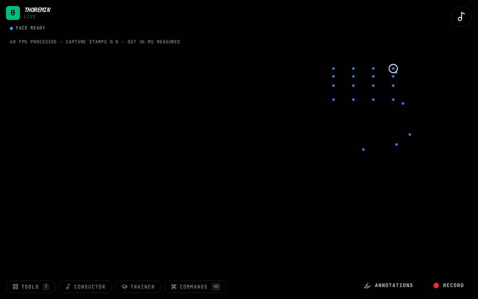

Air Flute

What to do
- First teach it your fingerings (the editor's Air flute section).
- Lift fingers to choose the note.
- Blow, with the mouth shape you taught, to make the sound.
Finger a note in the air and blow to play it.
How it works
Which fingers are lifted chooses the note (charts for seven wind instruments are built in as a guide). A mouth shape you enrol as "blowing" gates the sound. A sequence trainer walks you through target notes.
Its settings: Air flute. Every knob: the manual.